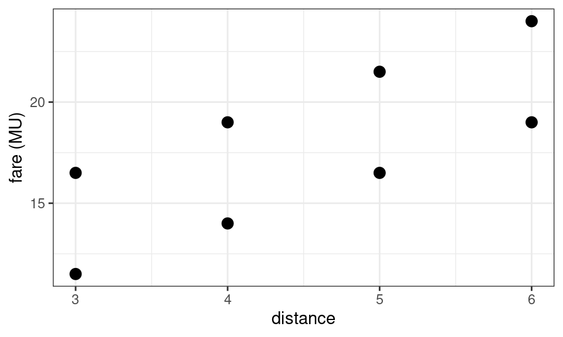
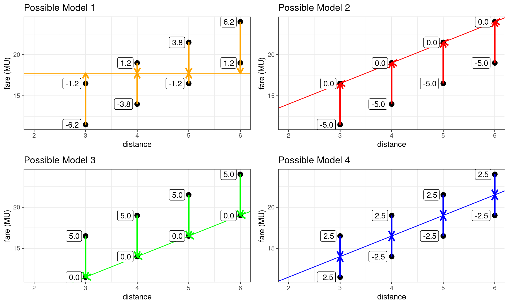

Chapter 5 Linear Models With Error
- So far, we have been working with specific subsets of the data which kept all variables that were irrelevant for our present purposes constant (e.g., \(distance=10~km\), \(N_{bridges} = 0\)).
- We were able to do that because we knew which variables are relevant since the dataset was created artificially.
- In real-life scenarios this is not always possible - not even when describing a deterministic system such as the cab fare pricing scheme. This is because:
- We often don’t know all the relevant variables.
- We don’t know in which ways they may interact.
- Even if we knew all that, we may be left with very little data if we keep taking subsets with specific characteristics all the time. (For example, a dataset with \(N_{bridges} = 0\) may not have a lot of rides with \(distance > 1~km\) if the city has many bridges.)
- The bottom line is that in any realistic situation, we will omit relevant predictors from the model specification, because we don’t know what they are, or couldn’t (afford to them) record them.
- Let’s look at how this would affect our analysis by applying a single-variable model to the data from section 4.2, which varies in distance an number of bridges.
- We will apply the single-variable model in equation (5.1) to a random(-ish) sample from the data from section 4.2 (i.e., only yellow cabs, one passenger).
- In a real-world scenario, we could use a model with missing predictors because because we did not consider those predictors relevant, or because we may not have information on them (i.e., we didn’t record the number of bridges on our taxi rides through town).
\[\begin{equation} \text{fare} = a + b * \text{distance} \tag{5.1} \end{equation}\]
- The plot below is not as clean as the previous plots - and it doesn’t seem to be possible to perfectly describe all the points by one line. While the average fare seems to increase with distance, there is also some variability in the fare at most distances. This is because the number of bridge crossings is unaccounted for. It is as if we were looking at a photo of a three-dimensional plot which was taken from the side.

5.1 A Whole Zoo of Models
- There is a whole range of models we can use to describe these data. (The numbers next to the data points denote the ‘errors’, i.e., the deviations from the line.)
- Which would you choose?

- One way to think about it is – which model has the largest ‘error’?
- … And how shall we measure the error anyway? – Well, we could use the individual ‘errors’, also called the ‘residuals’.
- The table below summarizes the sum of absolute errors and the sum of squared errors.
- As you see, the sum of absolute errors is the same for models 2,3, and 4. And that makes sense, because the sum of 4 errors of magnitude 5, and 4 errors of magnitude 0 is the same as the sum of 8 errors of magnitude 2.5.
- The sum of squared errors on the other hand is the lowest for model 4. This is because the sum of squared errors tends to be bigger for combinations of one big error and one small error (\(5^2+0^2=25\)), than for two medium-sized errors (\(2.5^2+2.5^2 = 12.5\)).
- The sum of squared errors seems to match our intuition about model quality. Let’s use it for now.
| Sum of absolute errors | Sum of squared errors | ||||
|---|---|---|---|---|---|
| model 1 | 25 | 112.5 | |||
| model 2 | 20 | 100 | |||
| model 3 | 20 | 100 | |||
| model 4 | 20 | 50 |
- Interesting, so different sets of parameters result in different sums of squared errors. If we could only create some sort of map of it in order to look at all the other options and find the best parameters (those that minimize that error).
- It turns out, we can. What you see below is a plot of the sum of squared errors (y-axis), as a function of the values for the intercept \(a\) (x-axis) and slope (z-axis). The red point marks parameter combination with the lowest error (50).
- The key insight the plot should provide is that having a function which allows us to compare different models (also known as the objective function) allows us to select the best model, because all we have to do is find its minimum (i.e., the combination of intercept and slope with the smallest sum of squared errors).
5.2 An Updated Linear Model
In the previous chapter, our system was deterministic since we knew every every variable that mattered and how it was to be included into the linear model equation. Once we fail to account for some predictors that matter, the system becomes non-deterministic - we can’t predict the fare exactly. In this case, this means that we can’t predict the exact fare, if we don’t know how many bridges were crossed on that taxi ride.
Unlike previously, we can’t solve a set of equations to arrive at coefficients that describe the data perfectly. But what we can do, is choose the coefficients such that the fare is predicted as well as possible. While we can’t account for all variation in the fare, we can at least account for some of the structure in it - and all the plots show that there is some structure.
In order to account for omitted variables (or possibly true randomness in the data), we need to modify the linear model equation to the form below.
\[ \underbrace{y_i}_{\text{Observed value}} = \overbrace{\underbrace{a}_{\text{Intercept}}}^{\text{additive term}} + \overbrace{\underbrace{b_1}_{\text{Slope}} * \underbrace{{x_1}_i}_{Predictor}}^{\text{additive term}} + \overbrace{\underbrace{b_2}_{\text{Slope}} * \underbrace{{x_2}_i}_{Predictor}}^{\text{additive term}} + \ldots + \underbrace{\epsilon_i}_{Error}\]
- The new element here is the error term \(\epsilon\), while the rest of the equation is as previously. You can think of the equation as consisting of three components.
- The intercept accounts for all constants, as well as the average effect of the omitted (and possibly even unknown predictors).
The slopes account for all variable effects due to known predictors.
Meanwhile, the error \(\epsilon\) term accounts for all variable effects due to omitted predictors. All errors need to sum to zero. (If they didn’t, that part should go to the intercept.)